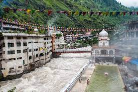
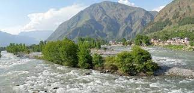

Kullu is a municipal council town that serves as the administrative headquarters of the Kullu district of the Indian state of Himachal Pradesh. It is located on the banks of the Beas River in the Kullu Valley about 10 kilometres (6.2 mi) north of the airport at Bhuntar.
Kullu Valley is a broad open valley formed by the Beas River between Manali and Larji. This valley is known for its temples and its hills covered with pine and deodar forest and sprawling apple orchards. The course of the Beas river, originating from Beas Kund[1] presents a succession of magnificent, clad with forests of deodar, towering above trees of pine on the lower rocky ridges brings the most out of this magnificent town. Kullu valley is sandwiched between the Pir Panjal, Lower Himalayan and Great Himalayan Ranges. Located in the Northern India, 497 k.m. away from The Capital Of India.
Kullu town, as the administrative headquarters of Kullu district, has the offices of Deputy Commissioner, the Superintendent of Police and the District courts. It is also the largest and the most varied constituency of Lok Sabha, the lower house of the parliament of India. Kullu administration was transferred from SultanPur(Former capital) to present Kullu town.